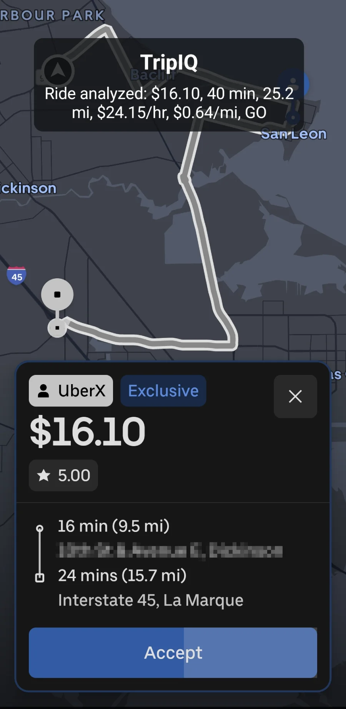

See value quickly
View estimated hourly and per-mile economics without doing mental math under pressure.
Private beta
DriVerdict analyzes supported ride-request screens on your Android device, calculates hourly and per-mile value, and shows a quick GO, MAYBE, or NO GO overlay while you decide.

What it does
DriVerdict uses user-authorized Android screen analysis to read a visible ride offer, extract fare, pickup time, pickup distance, trip time, and trip distance where available, then compare the result against your configured standards.
Driver benefits
View estimated hourly and per-mile economics without doing mental math under pressure.
Set GO and MAYBE thresholds for hourly rate and pay per mile inside the app.
DriVerdict displays a compact overlay above supported rideshare request screens while Real-Time Mode is active.
How it works
Android asks for screen analysis permission for the current session and display-over-other-apps permission for the overlay.
DriVerdict watches for ride-card shapes and text patterns associated with currently supported request screens.
The app shows estimated dollars per hour, dollars per mile, and a GO, MAYBE, or NO GO decision.
Current beta capabilities
Supports Uber and Empower ride-request analysis in the current private beta.
Calculates estimated hourly rate and pay per mile from parsed fare, time, and mileage fields.
Provides a same-day local dashboard summary by platform and decision category.
Includes recovery handling when Android stops screen analysis or the app needs to restore Real-Time Mode.
Privacy-first beta
DriVerdict processes supported ride-request screens directly on your Android device.
The current beta does not send screenshots, OCR text, ride-request information, analytics, or diagnostic logs to DriVerdict-operated servers.
DriVerdict does not request precise, approximate, or background location access.
Diagnostic logs may be stored locally to help troubleshoot beta issues.
Read the beta privacy policyAvailability
DriVerdict is currently in private beta testing and is not yet available for public download.